English | Español | 日本語 | 中文 | Português
4. Widgets
Previous Section (3. Programming with Music) | Back to Table of Contents | Next Section (5. Beyond Music Blocks)
This section of the guide will talk about the various Widgets that can be used within Music Blocks to enhance your experience.
Every widget has a menu with at least two buttons.

You can hide the widget by clicking on the Close button.
You can move the widget by dragging its containing the window.
4.1 Monitoring Status
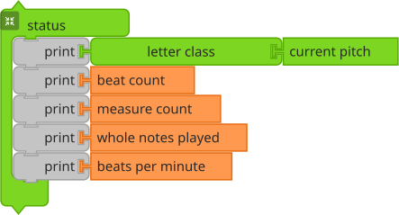
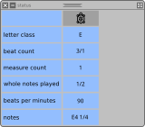
The Status widget is a tool for inspecting the status of Music Blocks as it is running. By default, the key, BPM, and volume are displayed. Also, each note is displayed as it is played. There is one row per voice in the status table. RUN LIVE
Additional Print blocks can be added to the Status widget to display additional music factors, e.g., duplicate, transposition, skip, staccato and slur, and graphics factors, e.g., x, y, heading, color, shade, grey, and pensize.
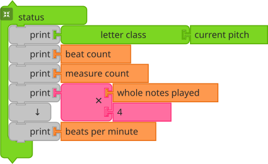
You can do additional programming within the status block. In the
example above, whole notes played is multiplied by 4 (to calculate
quarter notes played) before being displayed.
RUN LIVE
4.2 Generating Chunks of Notes
Using the Phrase Maker, it is possible to generate chunks of notes at a much faster speed.
4.2.1 The Phrase Maker
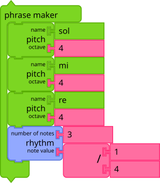
Music Blocks provides a widget, the Phrase maker, as a scaffold for getting started.
Once you've launched Music Blocks in your browser, start by clicking on the Phrase maker stack that appears in the middle of the screen. (For the moment, ignore the Start block.) You'll see a grid organized vertically by pitch and horizontally by rhythm.
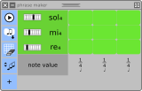
The matrix in the figure above has three Pitch blocks and one Rhythm block, which is used to create a 3 x 3 grid of pitch and time.
Note that the default matrix has five Pitch blocks, one Drum
block, and two Mouse (movement) blocks. Hence, you will see eight
rows, one for each pitch, drum, and mouse (movement). (A ninth row at
the bottom is used for specifying the rhythms associated with each
note.) Also by default, there are two Rhythm blocks, which specifies
six quarter (1/4) notes followed by one half (1/2) note.
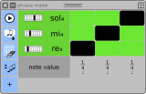
By clicking on individual cells in the grid, you should hear
individual notes (or chords if you click on more than one cell in a
column). In the figure, three quarter notes are selected (black
cells). First Re 4, followed by Mi 4, followed by Sol 4.

If you click on the Play button (found in the top row of the grid),
you will hear a sequence of notes played (from left to right): Re 4,
Mi 4, Sol 4.

Once you have a group of notes (a "chunk") that you like, click on the Save button (just to the right of the Play button). This will create a stack of blocks that can used to play these same notes programmatically. (More on that below.)
You can rearrange the selected notes in the grid and save other chunks as well.

The Sort button will reorder the pitches in the matrix from highest to lowest and eliminate any duplicate Pitch blocks.

There is also an Erase button that will clear the grid.
Don't worry. You can reopen the matrix at anytime (it will remember its previous state) and since you can define as many chunks as you want, feel free to experiment.
Tip: You can put a chunk inside a Phrase maker block to generate the matrix to corresponds to that chunk.
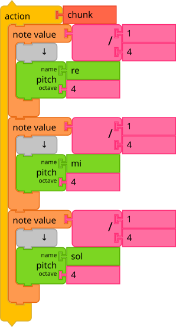
The chunk created when you click on the matrix is a stack of
blocks. The blocks are nested: an Action block contains three Note
value blocks, each of which contains a Pitch block. The Action
block has a name automatically generated by the matrix, in this case,
chunk. (You can rename the action by clicking on the name.). Each note
has a duration (in this case 4, which represents a quarter note). Try
putting different numbers in and see (hear) what happens. Each note
block also has a pitch block (if it were a chord, there would be
multiple Pitch blocks nested inside the Note block's clamp). Each
pitch block has a pitch name (Re, Mi, and Sol), and a pitch
octave; in this example, the octave is 4 for each pitch. (Try changing
the pitch names and the pitch octaves.)
To play the chuck, simply click on the action block (on the word action). You should hear the notes play, ordered from top to bottom.
4.2.2 The Rhythm Block
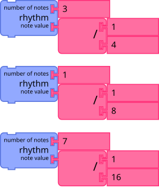
Rhythm blocks are used to generate rhythm patterns in the Phrase maker block. The top argument to the Rhythm block is the number of notes. The bottom argument is the duration of the note. In the top example above, three columns for quarter notes would be generated in the matrix. In the middle example, one column for an eighth note would be generated. In the bottom example, seven columns for 16th notes would be generated.
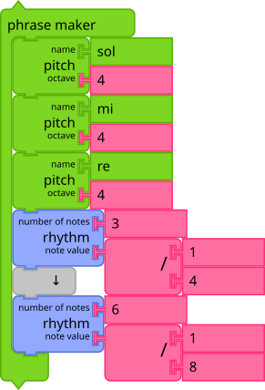
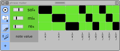
You can use as many Rhythm blocks as you'd like inside the Phrase maker block. In the above example, two Rhythm blocks are used, resulting in three quarter notes and six eighth notes. RUN LIVE
4.2.3 Creating Tuplets
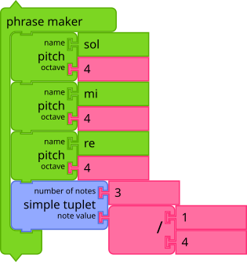
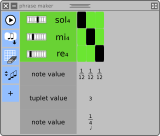
Tuplets are a collection of notes that get scaled to a specific duration. Using tuplets makes it easy to create groups of notes that are not based on a power of 2. RUN LIVE.
In the example above, three quarter notes—defined in the Simple Tuplet block—are played in the time of a single quarter note. The result is three twelfth notes. (This form, which is quite common in music, is called a triplet. Other common tuplets include a quintuplet and a septuplet.)
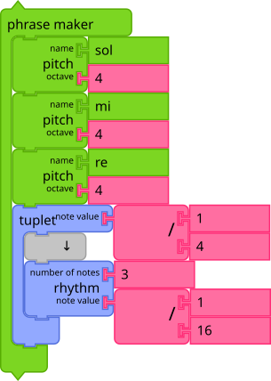
In the example above, the three quarter notes are defined in the Rhythm block embedded in the Tuplet block. As with the Simple Tuplet example, they are played in the time of a single quarter note. The result is three twelfth notes. This more complex form allows for intermixing multiple rhythms within single tuplet. RUN LIVE
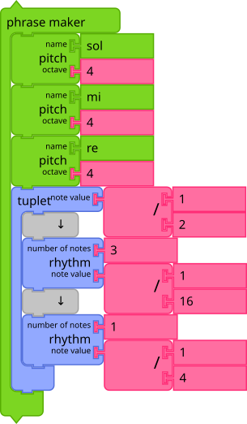
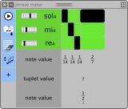
In the example above, the two Rhythm blocks are embedded in the Tuplet block, resulting in a more complex rhythm. RUN LIVE
Note: You can mix and match Rhythm blocks and Tuplet blocks when defining your matrix.
4.2.4 What is a Tuplet?
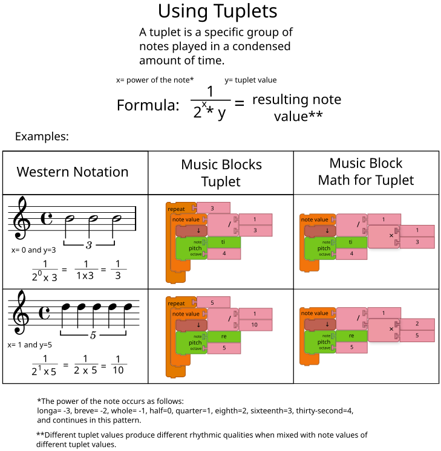
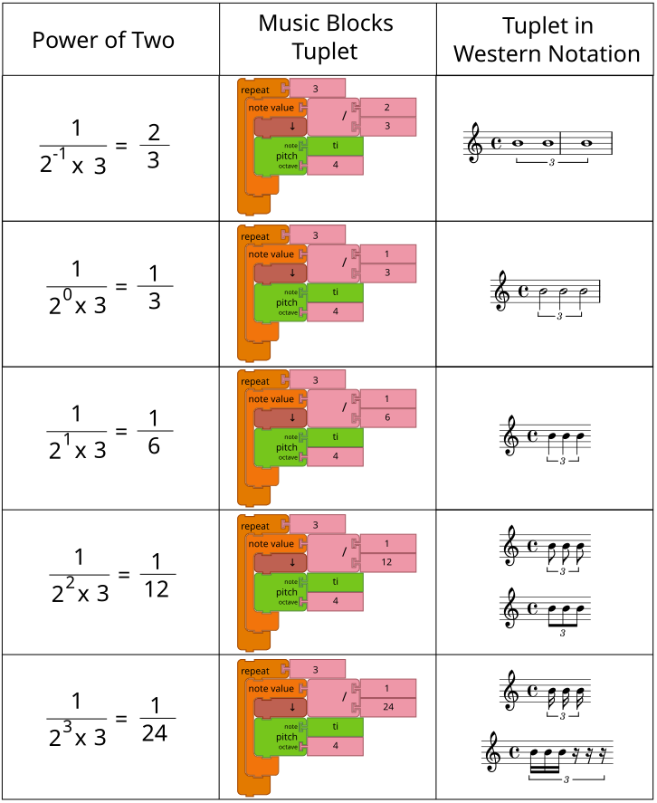
4.2.5 Using Individual Notes
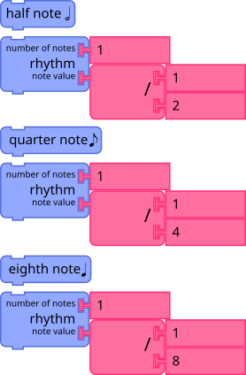
You can also use individual notes when defining the grid. These blocks will expand into Rhythm blocks with the corresponding values.
4.2.6 Using a Scale of Pitches
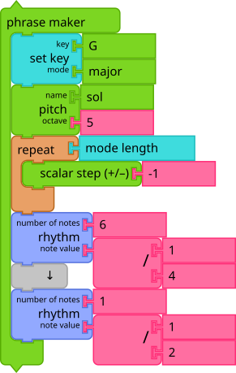
You can use the Scalar step block to generate a scale of pitches in
the matrix. In the example above, the pitches comprising the G major
scale in the 4th octave are added to the grid. Note that in order to
put the highest note on top, the first pitch is the Sol in Octave
5. From there, we use -1 as the argument to the Scalar step block
inside the Repeat, working our way down to Sol in Octave
4. Another detail to note is the use of the Mode length block.
RUN LIVE
4.2.7 LEGO Bricks Widget
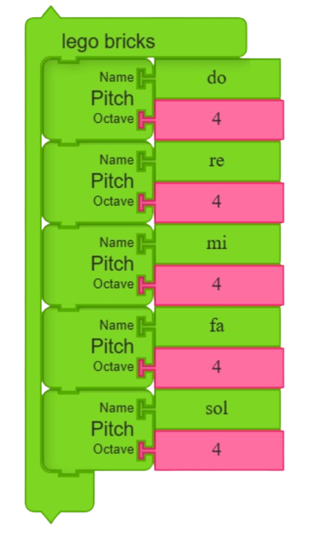
The LEGO Bricks widget represents a groundbreaking approach to music composition that bridges the physical and digital worlds. This innovative tool transforms tangible LEGO brick constructions into dynamic musical compositions through advanced computer vision and color detection algorithms.
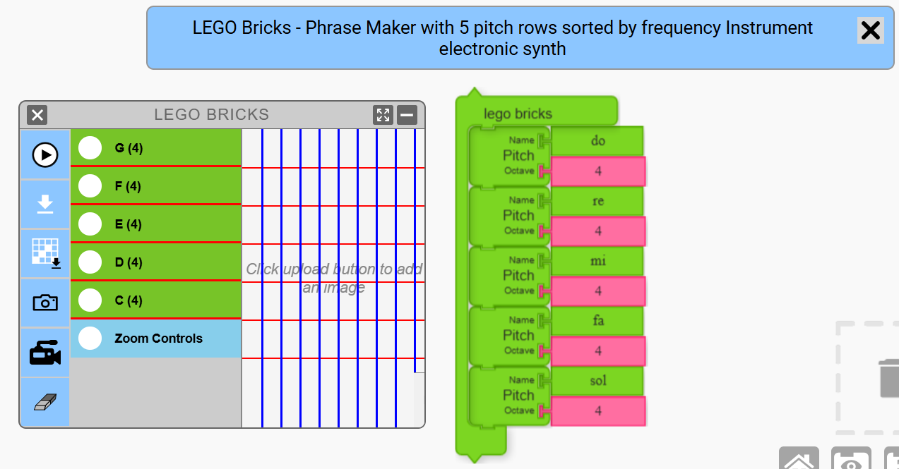
The widget operates by analyzing colored LEGO brick arrangements from uploaded images or live webcam feeds. Users can upload photos of their LEGO creations or use their device's camera to capture constructions in real-time. The widget features an intelligent color detection system that can adapt to different backgrounds and lighting conditions.
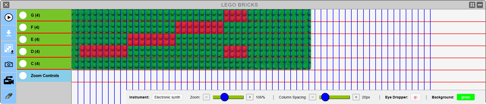
Key Features:
- Multiple Input Sources: Upload images of LEGO brick patterns or use webcam for live construction analysis
- Smart Background Detection: Eye dropper tool allows selection of background color (green baseplates, white surfaces, etc.) for accurate color detection
- Real-time Color Analysis: As the widget scans across the image with vertical lines, it identifies different colored bricks and maps them to musical pitches
- Customizable Scanning: Adjustable scanning speed and column spacing for precise timing control
- Interactive Color Selection: Live preview tooltip shows detected colors while hovering over the image
How It Works:
The widget scans the uploaded image or webcam feed using vertical scanning lines that move from left to right. Each vertical line represents a moment in time, while the vertical position corresponds to different musical pitches. When the scanner encounters a LEGO brick that differs from the selected background color, it triggers a musical note corresponding to that color and vertical position.
Musical Output:
- Real-time Audio Playback: Hear your LEGO creation as music while the scanning progresses
- Action Block Export: Generate Music Blocks code that can be further edited and incorporated into larger compositions
- Visual Feedback: Color detection visualization shows which areas of the image are being interpreted as musical notes
- Downloadable Results: Save both the generated music blocks and visual analysis for future use
Educational Value:
The LEGO Bricks widget combines STEM learning with creative expression, teaching concepts of pattern recognition, color theory, rhythm and timing, and creative coding. It bridges physical construction with digital programming concepts, making it particularly effective for introducing younger learners to music composition while leveraging their natural affinity for construction play.
Advanced Features:
Input Methods and Flexibility:
- Image upload support for various formats (JPEG, PNG, WebP)
- Live webcam integration for real-time analysis
- Batch processing for creating longer musical compositions
Color Detection System:
- Adaptive color calibration for various lighting conditions
- Color family recognition to prevent minor shade variations
- User-configurable tolerance settings for different environments
Scanning Technology:
- Precise vertical line scanning with systematic left-to-right movement
- Height-to-pitch conversion for intuitive spatial-to-musical relationships
- Horizontal spacing check for natural rhythmic pattern generation
Educational Applications:
Musical Pedagogy:
- Pattern recognition skills through visual-spatial construction
- Rhythm and timing concepts via spatial arrangement
- Pitch relationships through vertical construction patterns
- Composition techniques using systematic building approaches
Creative Development:
- Synesthetic learning connecting visual, spatial, and auditory perception
- Problem-solving skills for achieving specific musical outcomes
- Collaborative creativity in group construction projects
This widget exemplifies Music Blocks' philosophy of making music programming accessible and engaging by connecting familiar physical activities with abstract musical concepts. It serves as an ideal introduction to musical notations for a blind or a visually challenged individual. We can make it a lot more better in future and make many more activities with it LegoBlocks.
4.3 Generating Rhythms
The Rhythm Maker block is used to launch a widget similar to the Phrase maker block. The widget can be used to generate rhythmic patterns.
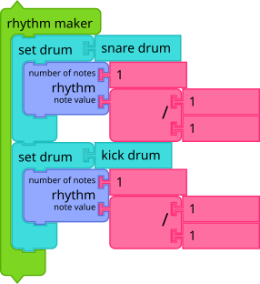
The argument to the Rhythm Maker block specifies the duration that will be subdivided to generate a rhythmic pattern. By default, it is 1 / 1, e.g., a whole note.
The Set Drum blocks contained in the clamp of the Rhythm Maker block indicates the number of rhythms to be defined simultaneously. By default, two rhythm "rulers" are defined. The embedded Rhythm blocks define the initial subdivision of each rhythm ruler.
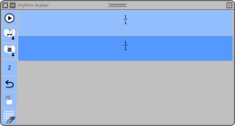
When the Rhythm Maker block is clicked, the Rhythm Maker widget is opened. It contains a row for each rhythm ruler. An input in the top row of the widget is used to specify how many subdivisions will be created within a cell when it is clicked. By default, 2 subdivisions are created.
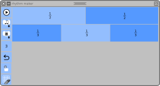
As shown in the above figure, the top rhythm ruler has been divided into two half-notes and the bottom rhythm ruler has been divided into three third-notes. Clicking on the Play button to the left of each row will playback the rhythm using a drum for each beat. The Play-all button on the upper-left of the widget will play back all rhythms simultaneously.
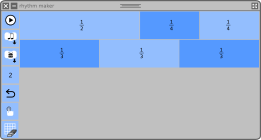
The rhythm can be further subdivided by clicking in individual cells. In the example above, two quarter-notes have been created by clicking on one of the half-notes.
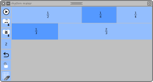
By dragging across multiple cells, they become tied. In the example above, two third-notes have been tied into one two-thirds-note.
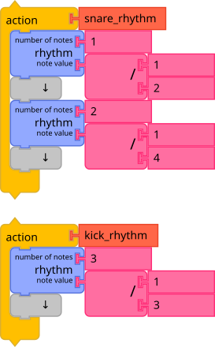
The Save stack button will export rhythm stacks.
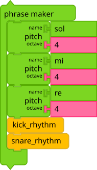
These stacks of rhythms can be used to define rhythmic patterns used with the Phrase maker block.
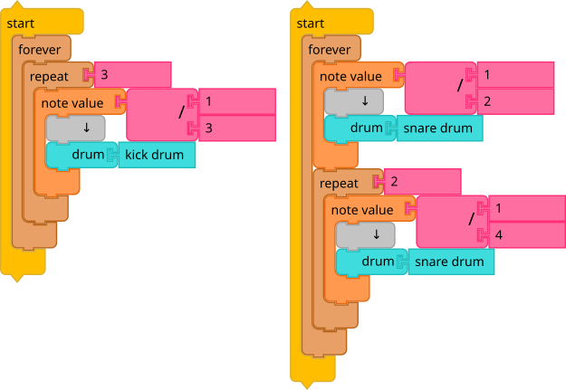
The Save drum machine button will export Start stacks that will play the rhythms as drum machines.
Another feature of the Rhythm Maker widget is the ability to tap out a rhythm. By clicking on the Tap button and then clicking on a cell inside one of the rhythm rulers, you will be prompted (by four tones) to begin tapping the mouse button to divide the cell into sub-cells. Once the fourth tone has sounded, a progress bar will run from left to right across the screen. Each click of the mouse will define another beat within the cell. If you don't like your rhythm, use the Undo button and try again. RUN LIVE
4.4 Musical Modes
Musical modes are used to specify the relationship between intervals (or steps) in a scale. Since Western music is based on 12 half-steps per octave, modes specify how many half steps there are between each note in a scale.
By default, Music Blocks uses the Major mode, which, in the
Key of C, maps to the white keys on a
piano. The intervals in the Major mode are 2, 2, 1, 2, 2, 2,
1. Many other common modes are built into Music Blocks, including, of
course, Minor mode, which uses 2, 1, 2, 2, 1, 2, 2 as its
intervals.
Note that not every mode uses 7 intervals per octave. For example, the
Chromatic mode uses 11 intervals: 1, 1, 1, 1, 1, 1, 1, 1, 1,
1, 1, 1. The Japanese mode uses only 5 intervals: 1, 4,
2, 3, 2. What is important is that the sum of the intervals
in an octave is 12 half-steps.
The Mode length block will return the number of intervals (scalar steps) in the current mode.
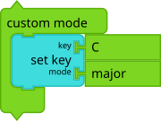
The Mode widget lets you explore modes and generate custom modes. You invoke the widget with the Custom mode block. The mode specified in the Set key block will be the default mode when the widget launches.
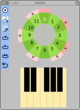
In the above example, the widget has been launched with Major mode (the default). Note that the notes included in the mode are indicated by the protruding sectors with 'X's, which are arrayed in a circular pattern of twelve half-steps to complete the octave.
Since the intervals in the Major mode are 2, 2, 1, 2, 2, 2, 1, the
notes are 0, 2, 4, 5, 7, 9,11, and 12 (one octave
above 0).
The widget controls run along the toolbar at the top. From left to right are:
Play all, which will play a scale using the current mode;
Save, which will save the current mode as the Custom mode and save a stack of Pitch blocks that can be used with the Phrase Maker block;
Rotate counter-clockwise, which will rotate the mode counter-clockwise (See the example below);
Rotate clockwise, which will rotate the mode clockwise (See the example below);
Invert, which will invert the mode (See the example below);
Undo, which will restore the mode to the previous version; and
Close, which will close the widget.
You can also click on individual notes to activate or deactivate them.
Note that the mode inside the Custom mode block is updated whenever the mode is changed inside the widget.
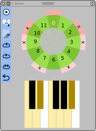
In the above example, the Major mode has been rotated counter-clockwise, transforming it into Dorian.
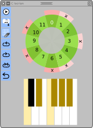
In the above example, the Major mode has been rotated clockwise, transforming it into Locrian.
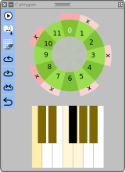
In the above example, the Major mode has been inverted, transforming it into Phrygian.
Note: The build-in modes in Music Blocks can be found in musicutils.js.
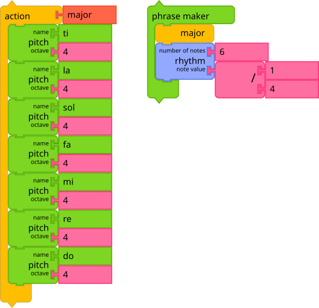
The Save button exports a stack of blocks representing the mode that can be used inside the Phrase maker block. RUN LIVE
4.5 Meters
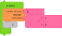
The Meter Widget block is used to explore strong and weak beats. Launch the widget with the meter you want to explore. (In the example, the meter is 4 beats per measure, where each beat is one quarter note.)
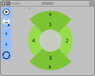
Inside the widget, you can click on a sector to indicate a strong beat. (Clicking on the X will revert the beat to a weak beat.) In the figure, the first and third beats are strong.
The Play button will play the beat, using a snare drum for strong beats and a kick drum for weak beats.
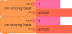
The Save button will export On strong beat do blocks for each strong beat.
4.6 The Pitch-Drum Matrix
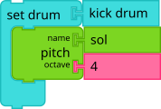
The Set Drum block is used to map the enclosed pitches into drum
sounds. Drum sounds are played in a monopitch using the specified drum
sample. In the example above, a kick drum will be substituted for
each occurrence of a sol 4.
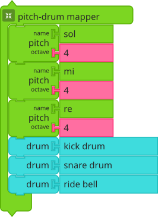
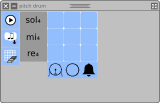
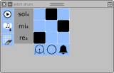
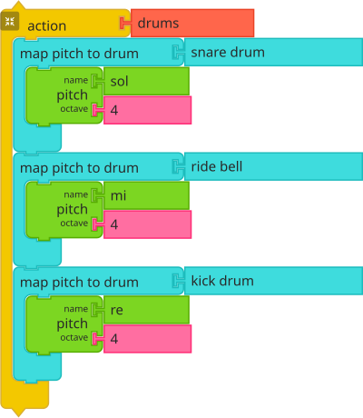
As an experience for creating mapping with the Set Drum block, we provide the Drum-Pitch Matrix. You use it to map between pitches and drums. The output is a stack of Set Drum blocks.
4.7 Exploring Musical Proportions
The Pitch Staircase block is used to launch a widget similar to the Phrase maker, which can be used to generate different pitches using a given pitch and musical proportion.
The Pitch blocks contained in the clamp of the Pitch Staircase block define the pitches to be initialized simultaneously. By default, one pitch is defined and it have default note "sol" and octave "3".
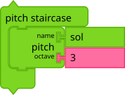
When Pitch Staircase block is clicked, the Pitch Staircase widget is initialized. The widget contains row for every Pitch block contained in the clamp of the Pitch Staircase block. The input fields in the top row of the widget specify the musical proportions used to create new pitches in the staircase. The inputs correspond to the numerator and denominator in the proportion respectively. By default the proportion is 3:2.
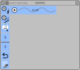
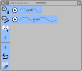
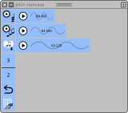
Clicking on the Play button to the left of each row will playback the notes associated with that step in the stairs. The Play-all button on the upper-left of the widget will play back all the pitch steps simultaneously. A second Play-all button to the right of the stair plays in increasing order of frequency first, then in decreasing order of frequency as well, completing a scale.
Clicking the wave icon shown in the widget will subdivide the pitch stacks according to the musical proportions defined in the widget's input fields. The Save stack button will export pitch stacks. For example, in the above configuration, the output from pressing the Save stack button is shown below:
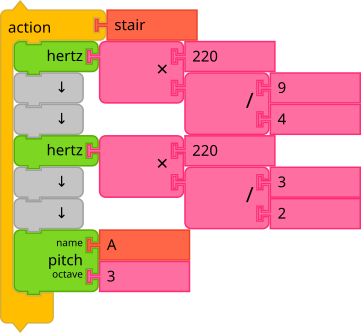
These stacks can be used with the Phrase maker block to define the rows in the matrix. RUN LIVE
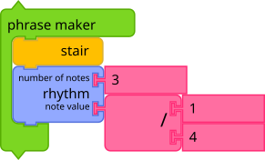
4.8 Generating Arbitrary Pitches
The Pitch Slider block is used to launch a widget that is used to generate arbitrary pitches. It differs from the Pitch Staircase widget in that it is used to create frequencies that vary continuously within the range of a specified octave.
Each Sine block contained within the clamp of the Pitch Slider block defines the initial pitch for an octave.
When the Pitch Slider block is clicked, the Pitch Slider widget is initialized. The widget will have one column for each Sine block in the clamp. Every column has a slider that can be used to move up or down in frequency, continuously or in intervals of 1/12th of the starting frequency. The mouse is used to move the frequency up and down continuously. Buttons are used for intervals. Arrow keys can also be used to move up and down, or between columns.
Clicking in a column will extract the corresponding Note blocks, for example:
4.9 Changing Tempo
The Tempo block is used to launch a widget that enables the user to visualize Tempo, defined in beats per minute (BPM). When the Tempo block is clicked, the Tempo widget is initialized.
The Master Beats per Minute block contained in the clamp of the
Tempo block sets the initial tempo used by the widget. This
determines the speed at which the ball in the widget moves back and
forth. If BPM is 60, then it will take one second for the ball to move
across the widget. A round-trip would take two seconds.
The top row of the widget holds the Play/pause button, the Speed up and Slow down buttons, and an input field for updating the Tempo.
You can also update the tempo by clicking twice in spaced succession
in the widget: the new beats per minute (BPM) is determined as the
time between the two clicks. For example, if there is 1/2 second
between clicks, the new BPM will be set as 120.
4.10 Custom Timbres
While Music Blocks comes with many built-in instruments, it is also possible to create custom timbres with unique sound qualities.
The Timbre block can be used to launch the Timbre widget, which lets you add synthesizers, oscillators, effects, and filters to create a custom timbre, which can be used in your Music Blocks programs.
The name of the custom timbre is defined by the argument passed to the
block (by default, custom). This name is passed to the Set timbre
block in order to use your custom timbre.
The Timbre widget has a number of different panels, each of which is used to set the parameters of the components that define your custom timbre.
- The Play button, which lets you test the sound quality of your
custom timbre. By default, it will play
Sol,Mi,Solusing the combination of filters you define.
You can also put notes in the Timbre block to use for testing your sound. In the example above, a scale will be used for the test. RUN LIVE
- The Save button, which will save your custom timbre for use in your program.
- The Synth button, which lets you choose between an AM synth, a FM synth, or a Duo synth.
- The Oscillator button, which lets you choose between a sine wave, square wave, triangle wave, or sawtooth wave. You can also change the number of partials.
- The Envelope button, which lets you change the shape of the sound envelope, with controls for attack, decay, sustain, and release.
- The Effects button, which lets you add effects to your custom timbre: tremelo, vibrato, chorus, phaser, and distortion. When an effect is selected, additional controls will appear in the widget.
-
The Filter button, which lets you choose between a number of different filter types.
-
The Add filter button, which lets you add addition filters to your custom timbre.
-
The Undo button.
As you add synthesizers, effects, and filters with the widget, blocks corresponding to your choices are added to the Timbre block. This lets you reopen the widget to fine-tune your custom timbre.
4.11 The Music Keyboard
The Music Keyboard is used to generate notes by pressing keys of a virtual keyboard.
When there are no Pitch blocks inside the widget clamp, a keyboard with all keys between C4 and G5 is created.
When there are Pitch blocks inside the widget clamp, a keyboard with only those pitches is created.
Click on the keys to hear sounds. Click on the Play button to playback all of the notes played. Click on the Save button to output code (a series of Note blocks). The Clear button is used to delete all keys pressed previously in order to start new.
The MIDI input allows for a using a MIDI device to generate notes.
The metronome feature will generate a beat to enable candence.
4.12 Changing Temperament
Tempering is the process of altering the size of an interval by making it narrower or wider than pure. It is also possible to change and create different tuning systems.
The Temperament block is used to launch a widget that enables the user to visualize and edit notes within an octave.
You can select a temperament system from the pie menu which is passed
as an argument to the block. This name is passed to the Set
temperament block in order to play the notes in selected temperament
system. Starting Pitch is the argument of pitch block inside
temperament block. In the above example, starting pitch is C4.
In the above example, selected temperament is Just Intonation. Notes within an octave can be viewed in the form of circle. These circles represent pitch numbers. Note that the pitches that are closer together in selected temperament system are visually closer and pitches that are farther apart looks farther.
The information regarding any note can be viewed by clicking on the
respective circle. In the above example, circle (pitch number) 2 is
D4. The frequency of note can be changed through edit button (left
hand side corner of note information popup).
Information regarding notes can also be viewed in the form of a table as shown in the above example. The table will show all the information about pitches that lie within an octave. This information includes pitch number, interval, ratio, note, frequency and mode.
The frequency of any note is calculated by Starting Pitch Frequency
x Ratio.
The widget controls are as follows:
The Clear button at the bottom of the widget will clear all pitches
except for a single 0 from which the user may add pitches.
The Play all button will play through all the pitches in an octave and then it will play backwards down the pitches.
The Save button will save custom temperament for use in your program. It will create a set temperament block. This block will tune the notes attached to it according to the selected temperament.
The Table button is used to toggle between circular and tabular representation of notes.
The Add button is used to edit notes through different tools:
The Equal edit tool is used to make equal divisions between two
pitch numbers. In the above example, two equal divisions are made
between pitch numbers 0 and 1 and the resultant number of notes
within an octave are changed from 12 to 13.
The Ratio tool is used to add notes of specified ratios in such a
way that the resultant pitches wrap inside a single octave. Recursion
represents the number of times notes ratio calculation is repeated. In
the above example, 2 notes are added in pitch space and the resultant
number of notes within an octave are changed from 12 to 14. Frequency
of first pitch is (Starting Pitch Frequency) * (16/13) and second
pitch is (Starting Pitch Frequency) * (16/13)².
The Arbitrary edit tool is used to add a note in an arbitrary
position. In this panel, whenever the user hovers over the outer
circle, a frequency-slider window pops up, allowing the user to add a
note according to a chosen frequency. In the above example, a new note
will be added somewhere between pitch numbers 2 and 3 by adjusting
the frequency slider.
The Octave Space tool is used to edit the octave ratio. The standard
octave space is 2:1. In the above example, octave space will be
changed to 3:1 after clicking on Done.
The Drag button will drag the widget.
The Close button will close the widget.
4.13 The Oscilloscope
Music Blocks has an Oscilloscope Widget to visualize the music as it plays.
A separate wave will be displayed for each mouse. RUN LIVE
4.14 The Sampler
You can import sound samples (.WAV files) and use them with the Set Instrument" block. The Sampler* widget lets you set the center pitch of your sample so that it can be tuned.
The pitch selector displays both the note name (such as A4) and its corresponding frequency in Hertz (Hz). This helps you understand the mathematical relationship between musical notes and sound frequencies - each octave represents a doubling of frequency (e.g., A4 is 440 Hz while A5 is 880 Hz).
How to import sound samples ?
By clicking the upload samples icon or by perfoming a drag and drop to sample canvas.
You can then use the Sample block as you would any input to the Set Instrument block.
4.15 Arpeggio
You can design custom sequences to use with the Arpeggio block using the Arpeggio widget. The widget lets you "paint" intervals that are then saved to a "custom" chord, which can be used with the Arpeggio block.
The numeric argument to the widget block, 12 in the figure
above, designates the number of columns. The widget always provides a
range of half-steps (one octave in the default a 12-step
equal-temperament tuning). (If you are in
a temperament with more notes per ocatve, the grid will expand.) The
rows that represent notes in the current mode are highlighted.
The horizonal axis is time and the verical axis is half-step offsets from the base note.
The sequence in the pattern above is do mi sol do do mi do sol mi
do do sol.